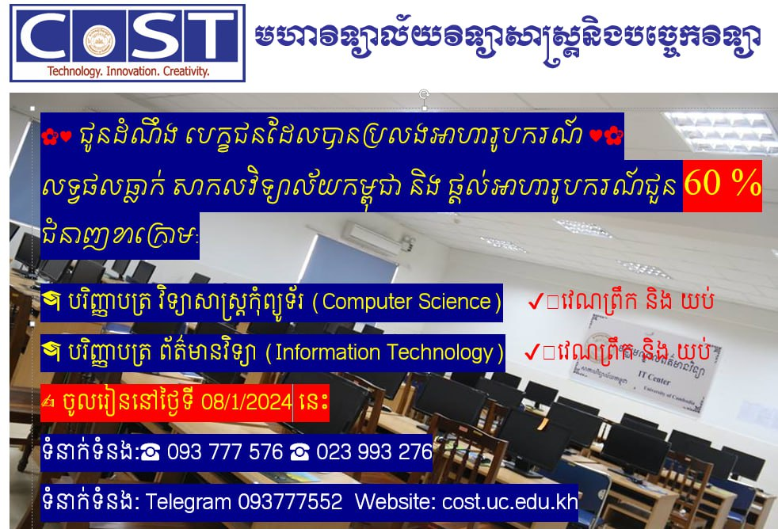
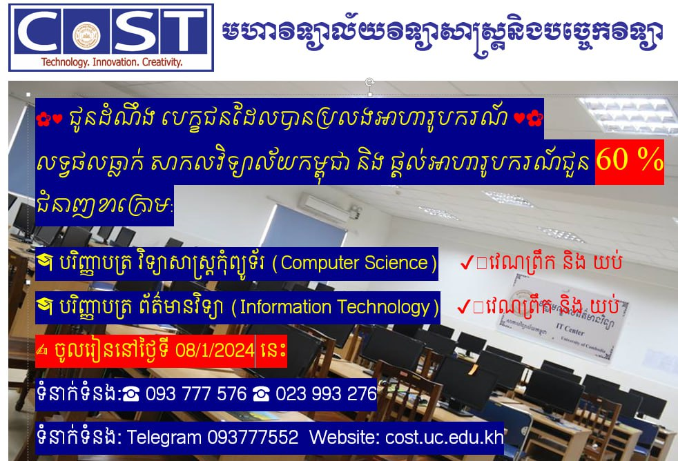

ស្វាគមន៍មកកាន់មហាវិទ្យាល័យវិទ្យាសាស្ត្រ និងបច្ចេកវិទ្យានៃសាកលវិទ្យាល័យកម្ពុជា។ សម្រាប់ប្អូនៗសិស្សានុសិស្ស ដែលមានបំណងចង់បន្តការសិក្សាថ្នាក់បរិញ្ញាបត្ររង និងថ្នាក់បរិញ្ញាបត្រ។ សូមចុះឈ្មោះជាមួយយើងឥឡូវនេះ ឬអាចអញ្ជើញមកកាន់សាកលវិទ្យាល័យផ្ទាល់ក៏បាន។ បេក្ខជនដែលបានប្រលងអាហារូបករណ៍គ្រប់ជំនាញទាំងអស់គ្នា បើសិនជាលទ្ធផលចេញមកធ្លាក់ សាកលវិទ្យាល័យកម្ពុជា នឹងមានផ្តល់អាហារូបករណ៍ ជូន 60% មុខជំនាញខាងក្រោម:
🎓 បរិញ្ញាបត្រ វិទ្យាសាស្ត្រកុំព្យូទ័រ (Computer Science) ✔️វេណព្រឹក និង យប់
🎓 បរិញ្ញាបត្រ ព័ត៌មានវិទ្យា (Information Technology) ✔️វេណព្រឹក និង យប់
✍️ ចូលរៀននៅថ្ងៃទី 08/1/2024 នេះ ទំនាក់ទំនង:☎️ 093 777 576 ☎️ 023 993 276 ទំនាក់ទំនង: Telegram 093777552
Welcome to College of Science and Technology of The University of Cambodia. For everyone who wishes to pursue for any AA and BA degrees of the study programs, please register now or visit the campus of The University of Cambodia.
 
